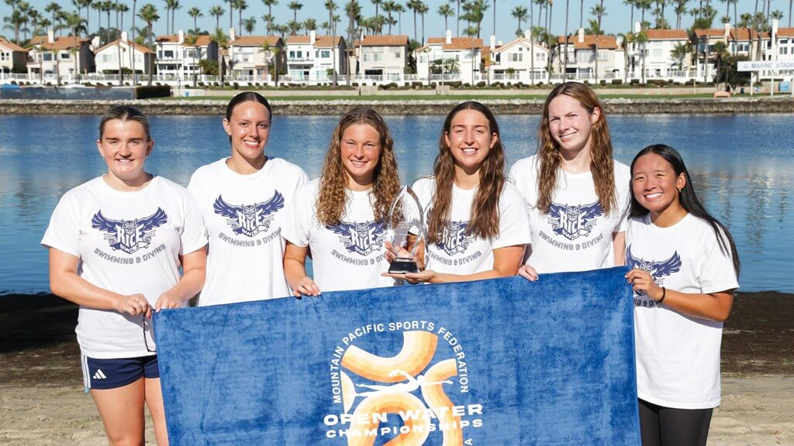
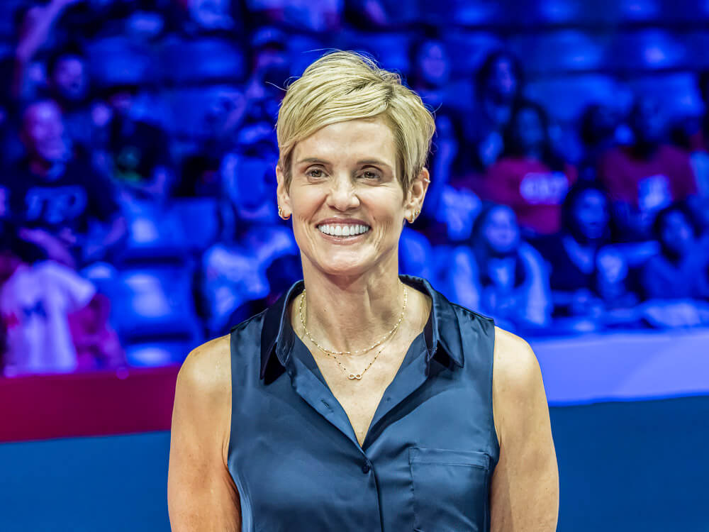
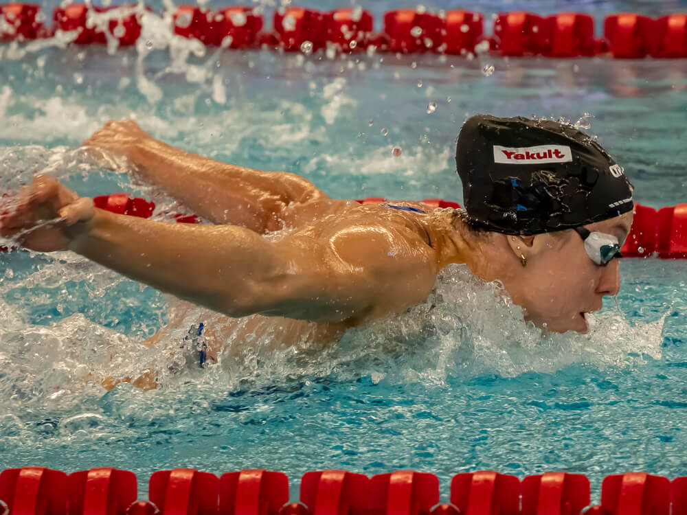
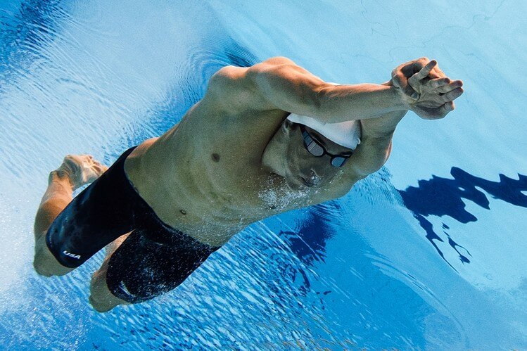
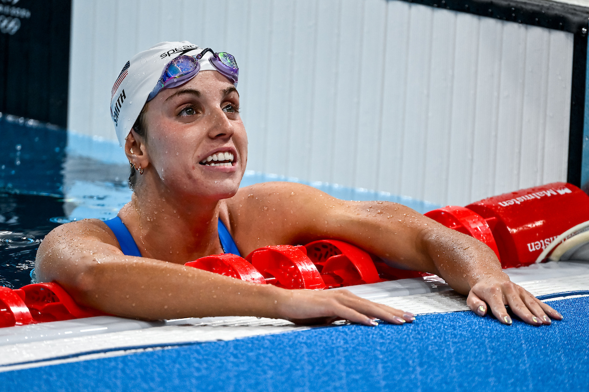
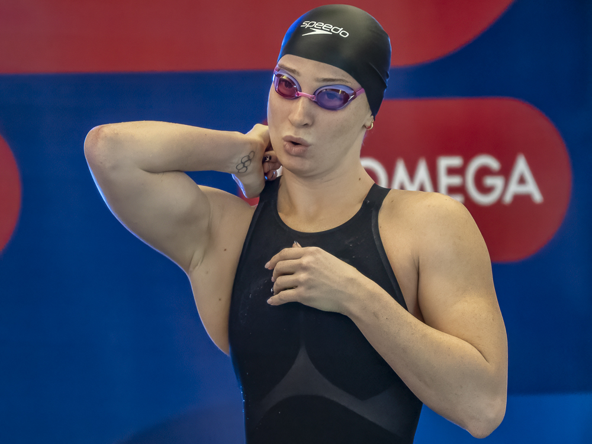
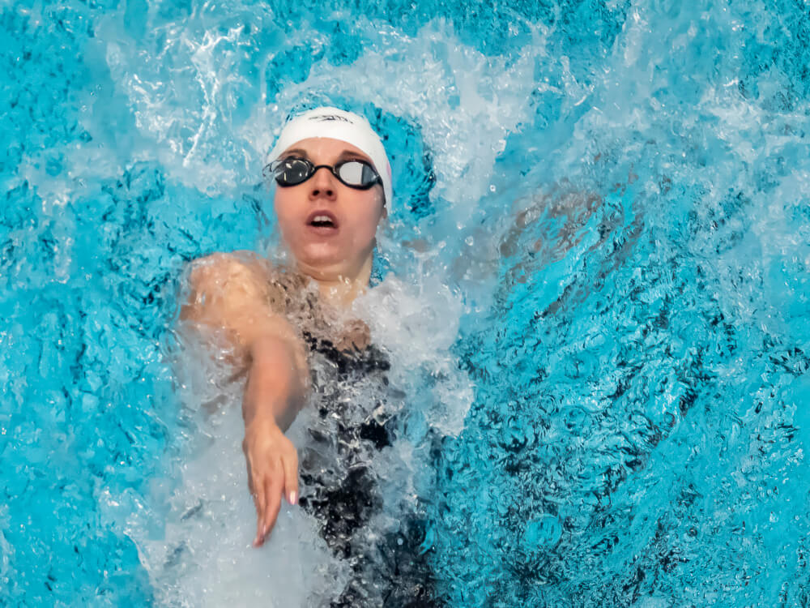
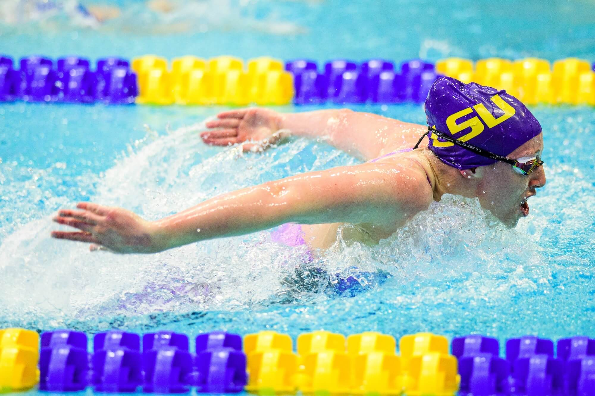
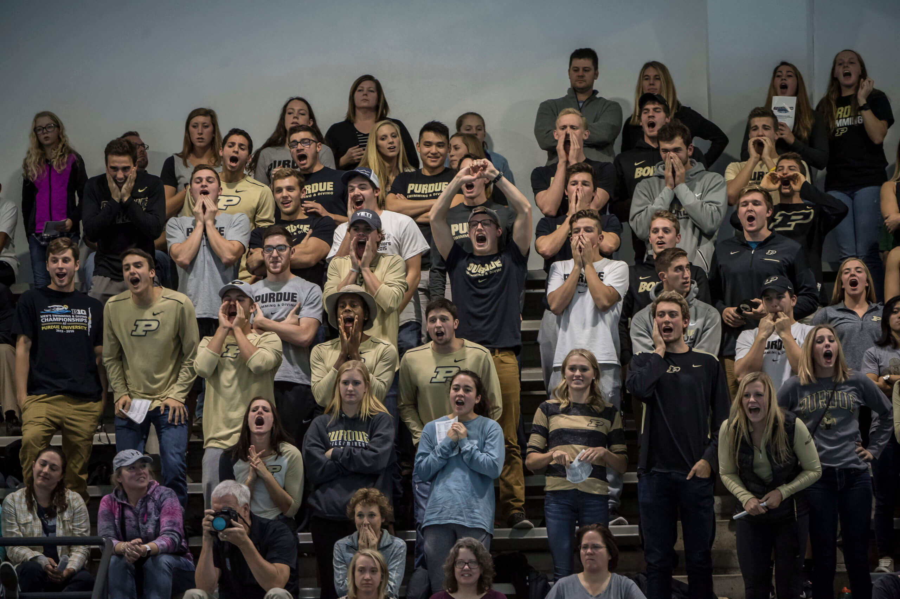
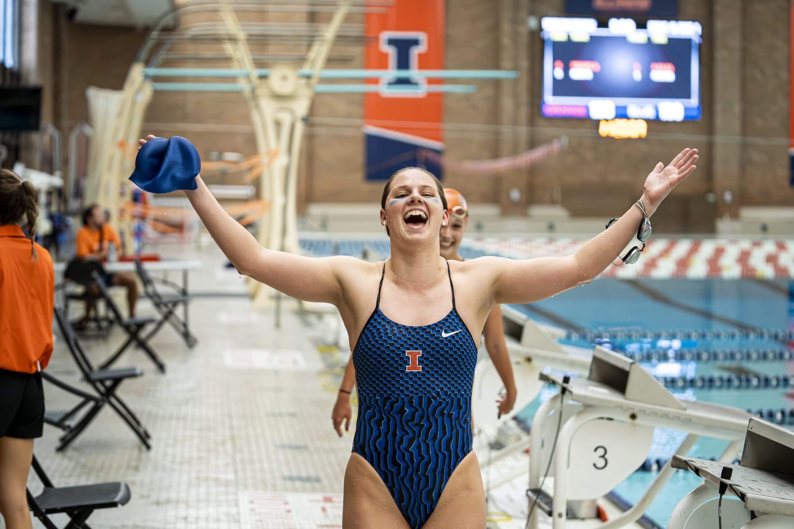

2025-10-19 17:31 EDT

Cal Baptist Men Repeat, Rice Women Win MPSF Open Water Championships The Cal Baptist men's team won its second straight MPSF Open Water Championship on Saturday, while the Rice women
The Cal Baptist men's team won its second straight MPSF Open Water Championship on Saturday, while the Rice women claimed their first title.
CBU scored 135 points to lift the title again at Marine Stadium in Long Beach, California at the conference's third staging of the event. The Lancers' score included a win in the men's 2,000-meter relay. Second in the team standings with 110 points was Grand Canyon, while Whittier College's 101 points edged BYU for third place.
Rice scored 148 points, tops among 17 scoring programs on the women's side. Washington State was second with 118, followed by 89 points for Cal Baptist in finishing third.
The gold medal in the men's race went to Whittier's Thomas Langlois, who covered the 5,000 meters in 59 minutes, 6.41 seconds. It took breaking an hour to get on the podium, with Cal Baptist's Mark Kovacsics second in 59:07.15, then Batu Servi of Grand Canyon.
CBU placed four in the top eight, though only three score. Holden Short was fifth, Cody Meyer seventh and Fernando Manceras eighth. UC Santa Barbara got a fourth-place finish from Connor Martilla. Wojciech Chalat of Quincy University was sixth.
The Lancers' relay team of Kovacsics, Short, Andrew Teh and Eli Rollen went 24:30.02, besting BYU's quartet of Darwin Anderson, Easton Mousser, Tanner Nelson and Dan Weber by five minutes. Anderson, who finished ninth in the 5,000, was BYU's top individual finisher. Grand Canyon was third in the relay.
On the women's side, Rice ran away with the title via a 1-2 finish. Ella Dyson, who has twice won the CSCAA open water individual title, added another trophy to the cabinet by going 1:01:21.0 to win. She finished 59 seconds ahead of teammate Ava Portello.
Rice's third scorer was Ava Hamblett in fifth place in 1:03:34.0, with teammate Renee Tan seventh for good measure.
Third place went to Kyra Rabess of Northern Colorado in 1:03:13.0. Washington State's Sophie Hay was fourth, with teammate Tatum Janning sixth. New Mexico State's Estel Galo Nogueira secured eighth place.
Rice rolled in the 2,000-meter relay, winning by 42 seconds. Dyson, Portello, Hamblett and Mollie McAlorum comprised that squad. Washington State was second with Hay, Janning, Vivien Nett and Avery Bulkley. BYU finished third.
2025-10-19 17:07 EDT

Celtics Star Jaylen Brown Details Partnership with Dara Torres, Boston College Celtics All-Star forward Jaylen Brown incorporated an aquatic regimen to his offseason this year, working with Boston College coach
Celtics All-Star forward Jaylen Brown incorporated an aquatic regimen to his offseason this year, working with Boston College coach Dara Torres.
Brown discussed the training during a recent interview with NBC Sports Boston on the Celtics preseason media day.
Celtics athletic trainer Drew Moore reached out to BC to see if someone on Torres' staff would be interested in helping one of their players. It turned out to be Brown, the four-time All-Star and 2024 NBA Finals MVP.
Torres, a 12-time Olympic medalist about to start her second season as the head coach of the Eagles' men's and women's teams, volunteered. She worked first with Brown in a therapy pool at the Celtics' Auerbach Center team complex before relocating to BC's Margot Connell Recreation Center pool about two miles away.
Brown went from a couple of workouts with Torres and assistant coach Chris Morgan to several weeks of multiple days of training.
"Just to perfect my form in the water," Brown said. "Try to master your efficiency, no wasted movement. I feel like the better swimmer you are is an analogy to life. You don't want no wasted movement, no drag, no extra. You want to just be able to get from Point A to Point B as easy as possible."
Brown, who turns 29 this month, stands 6-6 and 223 pounds. He's been remarkably durable in his NBA career since the Celtics took him No. 3 overall in the 2016 NBA Draft out of Cal, playing in at least 57 games in all nine of his pro seasons, though he was recovering this summer from surgery to repair a partially torn meniscus in his knee.
He averaged 22.2 points, 5.8 rebounds and 4.5 assists in 63 games last season, perhaps somewhat hampered by the meniscus. He has averaged 19.3 points in 135 career playoff games, winning an NBA title in 2024.
He and Torres worked on learning new techniques with apparatuses like fins and snorkels. Torres was impressed by his aerobic capacity to start with as well as his attention to detail. Brown had a fixation on making sure he was improving his technique in each workout.
"He could see the mistakes that he made at the beginning, and then the corrections that he made afterwards," Torres said. "You can see how much more efficient he was as he made those changes."
Video of Brown's training and his interview is available at NBC Sports Boston.
2025-10-19 11:48 EDT

World Cup Westmont - Day Three Prelims: Gretchen Walsh Closes in on Another Record Swim The final day of the World Cup stop in Westmont will unfold on Sunday, with
The final day of the World Cup stop in Westmont will unfold on Sunday, with the series then shifting to Toronto for its final leg. Action in the Chicago suburbs has been sensational, highlighted on Saturday night by world records from Mollie O'Callaghan in the 200-meter freestyle and Regan Smith in the 100 backstroke.
During the Sunday morning prelims, O'Callaghan will be back in the water for the 100 freestyle and Smith will race the 200 backstroke. On the men's side, Canadian Ilya Kharun has enjoyed a strong first two days in Westmont, claiming victories in the 50 freestyle and 200 butterfly. He's now set to contest the 50 butterfly, an event he won last week in Carmel.
Here is an event-by-event recap of the Day Three prelims:
The 400 IM is a timed final at the World Cup so the fastest heat based on entry times will swim in the finals.
In the earlier heats, Australia's Brendon Smith was the fastest of the morning, getting to the wall in 4:07.36.
Lucas Henveaux followed with a 4:08.56.
There was an 11-second gap from Henveaux to the rest of the field.
World record holder Gretchen Walsh took the top seed in the 100 fly, predictably, in 54.28. The time is less than a second off the World Cup record she swam last week in Carmel.
Her world record time is 52.71.
Australia's Alex Perkins took the second seed in 56.01, ahead of Belgium's Roos VanOtterdijk (56.90) and Finland's Laura Lahtinen (56.92), who all broke 57 seconds.
Australia's Olivia Wunsch took the fifth seed in 57.10, followed by Ireland's Ellen Walshe (57.43), New Zealand's Vanessa Ouwehand (57.75) and Australia's Brittany Castelluzzo (58.00).
Canada's Ilya Kharun put together a strong back-half of the race to touch the wall in 22.04 and take the top seed.
World Record holder Noe Ponti from Switzerland took the second seed in 22.18. He holds the World Cup record at 21.50 and the world record (SCM) in 21.32.
Finlay Brooks took the third seed in 22.22, followed by Canada's Josh Liendo (22.23), Singapore's Tzen Wei Teong (22.44), Trinidad and Tobago's Dylan Carter (22.62) - and a tie for the seventh seed with Ralf Tribuntsov and Simone Stefani at 22.63.
World record holder Regan Smith grabbed the top seed in the 200 backstroke, but not by much, and the field looks to bring perhaps the most interesting final tonight.
Smith took the top seed in 2:03.12 - four seconds off her World Cup record and nearly five off her world record - but it was just one hundredth of a second ahead of Miranda Grana (2:03.13) and that doesn't include Olympic medalists Phoebe Bacon (2:03.55) and Kaylee McKeown (2:03.77) looming.
Australia's Hannah Fredericks took the fifth spot in 2:03.99, followed by Anastasiya Shkurdai (2:04.23), Canada's Madison Kryger (2:04.62) and USA's Rhyan White (2:04.81).
Hungary's Hubert Kos was out strong and hung on to take the top seed in the 100 backstroke, getting to the wall in 50.22.
Canada's Finlay Knox was also sub-51, turning in a time of 50.85.
Australia's Enoch Robb was just behind with a 51.02, followed by Kacper Stokowski (51.06), Italy's Thomas Ceccon (51.13), Miroslav Knedla (51.28), Poland's Ksawery Masiuk (51.34) and Grant Bochenski (51.61).
Belgium's Florine Gaspard took a narrow lead into the turn and held on to take the top seed 29.79.
Ireland's Mona McSharry was just behind in 29.91, also under 30 seconds.
Canada's Sophie Angus took the third seed (30.16), Skyler Smith (30.22), Israel's Anastasia Gorbenko (30.29), Hungary's Henrietta Fangli (30.48), Emelie Fast (30.48) and Japan's Satomi Suzuki (30.56).
Caspar Corbeau of the Netherlands took the top seed by more than a second, getting to the wall in 2:04.07.
David Schlicht took the second spot in 2:05.37, followed by USA's Josh Matheny (2:05.63).
Spain's Carles Coll Marti took fourth in 2:05.72, followed by a trio of Japanese swimmers - Shin Ohashi (2:05.95), Ippel Watanabe (2:05.97) and Yamato Fukasawa (2:06.20).
Ilya Shymanovich took the last finals spot in 2:06.49, just ahead of Great Britain's Adam Peaty (2:06.96).
USA's Kate Douglass took the top seed in the 100 free, cruising to the wall in 51.27 after an opening 50 of 24.39.
Australia's Olivia Wunsch was a second behind at 52.26, followed by strong race from Canadian Olympian Taylor Ruck (52.30).
Marrit Steenbergen of the Netherlands took the fourth spot in 52.35, ahead of Polish Olympic medalist Kasia Wasick (52.41) and Italy's Sarah Curtis (52.43).
Australia's Mollie O'Callaghan took the seventh spot in 52.49 and USA's Anna Peplowski rounded out the finalists in 52.71.
USA's Chris Guiliano battled his way to the top seed with a 1:42.13 as just a second was the difference between spots 1-8.
Great Britain's Matthew Richards took the second seed in 1:42.38, ahead of USA's Luke Hobson (1:42.55). Hobson set the world record (SCM) in the event last year in Budapest.
Belgium's Lucas Henveaux took the fourth seed in 1:42.59, followed by USA's Patrick Sammon (1:42.76), Grant House (1:42.84), Brooks Curry (1:43.09) and Kieran Smith (1:43.16).
South Africa's Rebecca Meder claimed the top spot in the 200 IM, getting to the wall in 2:07.58.
USA's Alex Walsh took the second spot in 2:08.11, ahead of Israel's Anastasia Gorbenko (2:08.37), Great Britain's Abbie Wood (2:08.49), USA's Phoebe Bacon (2:08.82), while Japan's Mio Narita (2:09.00), Ireland's Ellen Walshe (2:09.01) and GB's Freya Colbert (2:09.26) rounded out the top eight.
2025-10-19 04:00 EDT

The Fifth Stroke: Dolphin Kick Drills That Can Improve Performance By Mark McCluskey, Swimming World College Intern In recent years, we have consistently watched the sport of swimming develop and
By Mark McCluskey, Swimming World College Intern
In recent years, we have consistently watched the sport of swimming develop and grow as we discover ways to become faster. One of the biggest discoveries is the importance of dolphin kick, an aspect of swimming that was explored in a documentary by the Olympic Channel.
Almost every successful swimmer can look at their use of dolphin kick as a reason behind their speed. Swimmers like Leon Marchand and Michael Phelps are known for staying under the water as long as they can off of each turn. Backstrokers try their hardest to dolphin kick as close to the 15-meter mark as they can without getting disqualified.
In the video below, you can see a swimmer prove that dolphin-kicks are among the fastest way of getting through the water; he beats his opponents by a sizeable distance (while getting disqualified for it along the way).
When discussing the importance of dolphin kick, the swimming community tends to focus on a swimmer's underwater kicks in backstroke, freestyle, and butterfly races. Coaches are constantly screaming at their swimmers to stay underwater off each wall and strengthen their underwater kicking to get a leg up on the competition.
What many people do not realize is that dolphin kicks can be used to improve even more than just your efficiency underwater. The power that the dolphin kick releases can be utilized in a lot more areas of swimming, whether in use of drills or in race strategy. Here are a few drills and strategies to capitalize on speed for your next race.
When thinking about breaststroke, it is rare that the first thing that comes to mind is dolphin kick, seeing as you are only allowed one off of each turn. However, the powerful motion of the undulation in dolphin kick is essential to having a strong breaststroke. Because of this, it can be very useful to practice breaststroke drills that include dolphin kick while in practice.
This drill is simple in theory. What a swimmer does in this drill is breaststroke arms with a dolphin kick, focusing on the shooting motion of their arms to the front. The point of this drill is to use the dolphin kick to bring your arms to the front faster, shooting oneself forward like a cobra. Once the swimmer converts back to normal breaststroke, their turnover should be quicker and more powerful. To get a better understanding, below is a YouTube video of the cobra drill in action, published by The Race Club (a swim club run by Gary Hall Sr., former Olympian).
The Karla Drill is another drill that incorporates the dolphin kick motion into breaststroke. While the Cobra Drill focuses more on arm speed and motion, the Karla Drill centers on using core strength and undulation motion in your breaststroke, even when doing a breaststroke kick. The drill combines butterfly and breaststroke in order for a swimmer to find the combination of butterfly and breaststroke motions to make their stroke more powerful. To do the drill, the swimmer does a one-arm butterfly stroke on their right, then on their left, then two regular breaststroke strokes. When doing the breaststroke, the swimmer needs to focus on using the undulation that they used in their butterfly when doing the breaststroke.
Click on the video example below to see the Karla Drill in action:
Dolphin kicks can also be useful in parts of races that people don't normally think to use them. A few coaches and high level swimmers have discovered new areas of a swim where they can utilize their strength in dolphin kicking even more to improve their speed in a race.
When racing sprint freestyle, swimmers always want to maintain a fast turnover; however, this can be hard at the end of a race. Even in races as short as a 50, swimmers will often slow down their turnover without even realizing it. To prevent slowing this turnover and increasing their speed, swimmers have taken to incorporating dolphin-kick freestyle at the end of their race. Using freestyle arms and dolphin kick can force a swimmer throw their arms around much quicker than when they do freestyle kick. The reason swimmers do not choose to do this all the time is that it can be very tough to maintain. Part of the reason it is hard to keep this technique sound is that a swimmer cannot breathe while doing it, or the rhythm will be broken. Phelps has been known to use this technique in the last 10 meters of his 100 freestyle. In another Race Club video by Gary Hall Sr., he explains in greater detail the technique and the improvements it can make to one's race.
In today's generation of swimming, it is essential that one perfects and strengthens their dolphin kick. Experts are going so far as to even call the underwater dolphin kick the "fifth stroke". While dolphin kicks are very important when pushing off each wall, the undulating motion of dolphin kicks is so powerful that it should be utilized in other areas of swimming, both in drill work and other areas of racing strategy. Swimmers should definitely think about using these methods the next time they hop in the pool.
2025-10-18 20:32 EDT

FLASH! Regan Smith Equals Own World Record in 100 Backstroke at World Cup When Regan Smith raced to a world record of 54.02 in the 100-meter backstroke at last year's
When Regan Smith raced to a world record of 54.02 in the 100-meter backstroke at last year's World Short Course Championships in Budapest, there were expectations for a career-best performance. On Saturday night, Smith wasn't expecting to go as fast as she did in Hungary, but that scenario indeed unfolded as Smith again went 54.02 over four laps of short-course backstroke.
Competing at the Westmont stop of the World Cup series, Smith was superb in the Chicago suburbs, earning a victory of more than a second over Australian Kaylee McKeown. Smith entered the race simply looking to garner as many points as possible in the chase to be the World Cup's top performer. The Team USA veteran obviously earned those points, and got much more.
After splitting 12.98 on the opening length, Smith stared at a .22 deficit to McKeown, the reigning Olympic champion in both backstroke events. But Smith moved in front by the midway point of the race, 26.45 to 26.65, and the U.S. standout was in control to the finish. Smith split 13.81 on the third lap and closed in 13.76 to tie her world record. McKeown was the runnerup in 55.04.
"That wasn't on my radar, obviously," Smith told World Aquatics. "I didn't feel like I had a lot of speed coming into this World Cup Series because (coaches) Bob (Bowman) and Erik (Posegay) have really been hammering us this season. I don't know, that felt like a great race. I didn't die coming home like I sometimes can in the 100 backstroke. I hit all my turns really well. I was proud of my underwaters. I touched the wall and was like, 'Oh, wow, that's really awesome.'"
Smith was coming off an American-record performance in the 200 butterfly on Friday night and she'll tackle the 200 backstroke on Sunday, where she'll again face off with McKeown.
2025-10-18 19:48 EDT

FLASH! Mollie O'Callaghan Blasts World Record in 200 Freestyle; Takes Even into Sub-1:50 Territory One week after breaking the Australian record in the short-course version of the 200-meter freestyle, Mollie
One week after breaking the Australian record in the short-course version of the 200-meter freestyle, Mollie O'Callaghan went faster than anyone in history in the event. Racing at the World Cup stop in Westmont (Ill.) on Saturday night, O'Callaghan broke the world record with a performance of 1:49.77, the first sub-1:50 effort. That time bettered the previous standard, held by Hong Kong's Siobhan Haughey at 1:50.31 since the 2021 World Short Course Championships.
A former world-record holder in the 200 freestyle (LC), O'Callaghan was expected to threaten Haughey's record after her effort last week. At the opening leg of the World Cup circuit in Carmel (Ind.), O'Callaghan clocked a mark of 1:50.77, which made her the No. 3 performer of all-time. Only Haughey and Sweden's Sarah Sjostrom (1:50.43) had been faster.
O'Callaghan didn't waste any time taking command of the final in the Chicago suburbs, as she opened with a split of 25.70 to take the lead over Dutchwoman Marrit Steenbergen by more than a half-second. O'Callaghan went through the midway point of the race in 53.59, which was more than a second faster than anyone in the field.
Relying on her closing speed, which has always been a trademark of the 21-year-old, O'Callaghan split 28.30 for the third 50 meters and come home in 27.88 to punctuate the world record and break the 1:50 barrier. Overall, the major work was done on the front and back ends of the race, where O'Callaghan was significantly faster than Haughey.
"I was so nervous all day," O'Callaghan said. "I knew I was capable of doing that swim. It was just if. And a lot of times, it might not work out, but I knew I had two-tenths left to try and crack it. It's nice to do short course, it's such a big change from long course. It's a different beast at the end of the day. I have a great support team behind me to get me to this moment. I'm thankful for them because truly, I wouldn't be here without them."
A comparison of the O'Callaghan-Haughey splits:
O'Callaghan: 25.70-53.59 (27.89)-1:21.89 (28.30)-1:49.77 (27.88)
Haughey: 26.20-53.81 (27.61)-1:22.03 (28.22)-1:50.31 (28.29)
Behind O'Callaghan, countrywoman Lani Pallister was the runnerup, going 1:52.06 to finish ahead of American Anna Peplowski, who turned in a time of 1:52.54.
2025-10-18 19:24 EDT

World Cup Westmont - Day Two Finals: Ellen Walshe Grabs Title in 400 IM (Live Recap) The second stop of the World Cup series got off to an impressive start
World Cup Westmont - Day Two Finals: Ellen Walshe Grabs Title in 400 IM (Live Recap)
The second stop of the World Cup series got off to an impressive start on Friday night, with circuit records registered by Australian Lani Pallister (400 freestyle) and the American duo of Regan Smith (200 butterfly) and Gretchen Walsh (100 individual medley). On the men's side, the United States' Shaine Casas topped the field in the 100 IM and Hungarian Hubert Kos remained undefeated in World Cup backstroke competition this year, his latest triumph in the 200 distance.
Additional highlights are expected on the second night of action in Westmont (Ill.), where Mollie O'Callaghan (200 freestyle) and Walsh (50 butterfly) could scare world records. Meanwhile, the latest showdown between Aussie Kaylee McKeown and Smith is set for the 100 backstroke, while Casas is the favorite in the 200 IM after setting an American record in the event last weekend.
Here is what unfolded on the second day of finals at the World Cup in Westmont:
One week after finishing as the runnerup in Carmel, Ireland's Ellen Walshe claimed victory in World Cup action. Walshe faced a two-second deficit to Canada's Mary-Sophie Harvey at the midway point of the race, but pulled in front after the breaststroke leg and widened her advantage over the closing freestyle. Walshe stopped the clock in 4:25.33, which handed her a comfortable margin over Harvey, who was timed in 4:28.92.
Great Britain's Abbie Wood, who won the event at the first stop of the World Cup, took third place in 4:31.84.
Hungary's Zalan Sarkany took a massive chunk off the World Cup record in the 800 freestyle, as the Indiana University standout posted a swim of 7:29.50. That effort was nearly six seconds faster than the 7:35.30 managed by China's Pan Zhanle last year in Incheon. Sarkany was just behind Australian Sam Short at the 300-meter mark, but was in front by the halfway point and pulled away.
Sarkany made a big move over the closing 200 meters to leave Short behind. The Aussie grabbed second place in 7:32.43, with American Carson Foster finishing third in 7:34.10.
Make it five victories in as many backstroke races for Hubert Kos, the Hungarian star who races collegiately for the University of Texas. After sweeping the backstroke events last week, Kos followed his Westmont win in the 200 backstroke on Friday night with a tight triumph in the 50 distance on Saturday. Kos touched the wall in 22.91, just .01 ahead of the time by Poland's Kacper Stokowski. Italian Thomas Ceccon was right there at the finish, going 22.94.
Kos will try to complete his second sweep on Sunday when he contests the 100 backstroke. If he can pull out that victory, Kos will have a chance at three Triple Crowns when the World Cup moves to its final stop next week in Toronto.
Following an Australian record in the 200 freestyle last week, Mollie O'Callaghan was even better during the second leg of the World Cup, popping a world record of 1:49.77. That swim broke the previous standard of 1:50.31, set in 2021 by Siobhan Haughey of Hong Kong. O'Callaghan led a one-two Aussie finish, as Lani Pallister was second in 1:52.06, with American Anna Peplowski going 1:52.54 for third place.
More on O'Callaghan's Record
As usual, Shaine Casas put together a sensational front half of the 200 individual medley, and his early advantage led to a two-second decision of Canada's Finlay Knox. Casas posted a time of 1:50.08 for his second straight World Cup win in the event, as he defeated Frenchman Leon Marchand in last week's meet. Marchand is not competing in Westmont.
Casas was in front immediately, splitting 23.25 for the butterfly leg and going through the 100-meter turn in 50.44. Knox recorded a time of 1:52.12, which was more than a second up on Japan's Tomoyuki Matsushita, who was third in 1:53.26.
The United States' Regan Smith fired off the second world record of the session when she matched her own global standard in the 100 backstroke. Nearly a year after clocking 54.02 en route to the gold medal at the World Short Course Championships in Bufapest, Smith again flirted with a sub-54 performance while snaring a dominant triumph.
Smith was second to Australian Kaylee McKeown after the opening 25 meters, but she dominated from that point forward. Smith was .20 ahead of her rival at the 50-meter mark and expanded her lead to .52 at the 75-meter turn. Down the last length, Smith out-split McKeown by .50, evidence of her stellar form. On Friday night, Smith set an American record in the 200 butterfly.
McKeown was second in 55.04, with Bella Sims going 55.51 for third place.
The Netherlands' Caspar Corbeau reversed the outcome of Friday's 100 breaststroke when he won the sprint over Belarus' Ilya Shymanovich. Corbeau sped to a mark of 25.52, which gave him a .11 margin over Shymanovich, who touched the wall in 25.63. Corbeau will look for a repeat in the 200 breaststroke on Sunday, as he won that event in Carmel. Finishing third in 25.75 was Finlay Brooks, while Great Britain's Adam Peaty went 26.10 for fourth.
The world-record holder in the 50 butterfly after blazing a 23.72 last weekend, American Gretchen Walsh posted the second-fastest performance in history on Saturday night when she went 23.90. Walsh now owns the nine-fastest times in the history of the event and is the only woman to break the 24-second barrier. In her latest swim, Walsh was out in 11.06 and came home in 12.84.
Alexandria Perkins of Australia was second place in 24.60, the only other athlete in the field to go under 25 seconds. Belgium's Roos Vanotterdijk was third in 25.41.
The United States' Jack Alexy pulled away from countryman Chris Guiliano over the last half of the race to earn his second consecutive World Cup title in the 100 freestyle. Alexy produced a time of 45.84 to beat Guiliano (46.11), while Brooks Curry and Tomas Lukminas tied for third in 46.23.
Alexy was .03 behind Guiliano at the 50-meter turn, but the Cal product moved in front by .22 on the third length and remained in front to the finish. Alexy was faster during the morning, as he went 45.53 in prelims.
Coming off a victory in the 200 breaststroke on the opening day of the meet, American Kate Douglass bested the opposition at half the distance. In wire-to-wire fashion, Douglass grabbed the victory in 1:03.14, which was a little more than a second faster than the 1:04.18 of Ireland's Mona McSharry. Douglass' training partner, Alex Walsh, was third in 1:04.45.
Canadian Ilya Kharun, a standout at Arizona State University, established a World Cup record in the 200 butterfly when he covered his eight laps in 1:48.46. Kharun was the winner of the 50 freestyle on Friday night, when he also was second place in the 100 fly. In the 200 butterfly, Kharun finished comfortably ahead of Switzerland's Noe Ponti, who was the runnerup in 1:49.32.
2025-10-18 17:21 EDT

The LSU swimming and diving team overcame the elevation and collected six dual meet victories over each of its opponents Saturday afternoon at Cadet Natatorium. The No. 14 Tiger men
The LSU swimming and diving team overcame the elevation and collected six dual meet victories over each of its opponents Saturday afternoon at Cadet Natatorium.
The No. 14 Tiger men defeated host school Air Force by a score of 215-157, Denver, 225-147, and Wyoming, 225-147.
The No. 21 LSU women bested Air Force, 219-153, Denver, 228-144, and Wyoming, 216-156.
To kick off the meet, the LSU women's 400-medley relay squad of Zoe Carlos-Broc, Martina Bukvic, Sofia Sartori, and Anastasia Bako touched the wall first with a time of 3:43.06. The men followed up with a victory of their own. Stepan Goncharov, Volodomyr Lisovets, Caleb Ellis, and Jere Hribar took the top spot with a time of 3:13.21.
Nicole Santuliana and Bukvic notched the second spot in their respective events. Santuliana placed second in the 1000-free, coming in with a time of 10:33.33, while Bukvic came in second in the 200-IM with a time of 2:08.11.
In the 50-free, Michaela de Villiers finished second with a time of 23.26. Avery Littlefield followed in third with a time of 23.37. On the men's side, Hribar picked up the Tigers' first individual win of the day. The junior recorded a time of 19.64. Andrew Garon followed him in second with a time of 20.59.
LSU took the top spot again in the men's and women's 200-fly. Sartori touched the wall first for the women, recording a time of 2:02.04. Her teammate Giulia Zambelli finished right behind her in second with a time of 2:03.35. For the men, Ellis placed first in the event, clocking a time of 1:51.85. Jacob Pishko came in at 1:54.06, good for third place.
Carlos-Broc kept the winning ways going for the Tigers, taking the top spot in the 100-back with a time of 54.88. Goncharov followed with a victory for the men, putting together a time of 48:04.
In the 100-breast, Bukvic added her second individual win of the meet. The freshman recorded a time of 1:03.09. Sabrina Lyn finished third in the race with a time of 1:04.19. On the men's side, Lisovets was able to claim second, coming in at 55.10.
Jovan Lekic dominated in the 200-free, posting a time of 1:39.66 and ousting the competition by over two seconds. Megan Barnes came in at 1:52.57, good for second place in the women's race.
In the meet's final event - the 200-free relay - LSU touched the wall first in the women's race and second and third in the men's. The women's squad of de Villiers, Carlos-Broc, Avery Littlefield, and Bako topped the competition with a time of 1:31.98. The men's group of Albert Bouley, Garon, Ellis, Simon Meubry placed second, putting up a time of 1:22.00, while the next group of Diggory Dillingham, Hribar, Avdiu, and Karlo Percinic placed third with a time of 1:22.08.
For diving, Carson Paul won the third and final diving event of the meet on the platform. The senior put up a score of 343.70, a score meeting the NCAA Division I qualifying standard. Travis Keith placed sixth, totaling 261.50 points. Eve Nelson placed fifth for the women on the platform, scoring 187.00 points.
- The above press release was posted by Swimming World in conjunction with LSU Athletics. For press releases and advertising inquiries please contact Advertising@SwimmingWorld.com.
2025-10-18 15:55 EDT

The Purdue men's and women's swimming and diving teams swept Missouri on Saturday, Oct. 18. The Purdue men won 184-116 and the women won 192-108. In the women's meet, Purdue's
The Purdue men's and women's swimming and diving teams swept Missouri on Saturday, Oct. 18.
The Purdue men won 184-116 and the women won 192-108.
In the women's meet, Purdue's Reagan Mattice won the 1000 free (10:04.63) and 500 free (4:57.61). Kate Mouser won the 200 free (1:49.22) and 200 IM (2:03.19). Abby Marcukaitis won the 100 backstroke in 54.70. Campbell Schofield won the 200 fly (2:02.10). Hannah Hill won the 50 free (23.31). Lara Phipps won the 100 free (49.90) and 100 fly (55.16).
Purdue's Daryn Wright won 1-meter diving with 316.05 points and 3-meter (342.00).
Phipps, Caitlin Hurley, Adele Sands and Mattice won the 400 free relay in 3:23.53.
Missouri's Sydney Bales, Lina Bank, Grace Hanson and Katie Kuehn won the 200 medley relay in 1:40.59. Bank won the 100 breaststroke (1:02.14) and 200 breaststroke (2:18.39). Libby Bakker won the 200 back (1:59.06).
In the men's meet, Purdue started with a 200 medley relay win as Brody LePine, Jonah Lee, Alex Hotta and Janis Dzirkalis won in 1:26.40.
Purdue's Patrick Broderick won the 1000 free in 9:09.25 and 500 free (4:26.25). Evan Mackesy won the 200 free (1:37.49). Max Blume won the 100 breaststroke (53.64). Dzirkalis won the 50 free (19.79) and 100 free in 44.24. Blake Rowe won the 200 back (1:43.79). Giorgio Mango won the 200 breast (1:57.64) just ahead of Blume (1:58.72).
Zachary Welsh won 3-meter diving with 405.98 points.
Hotta, Dzirkalis, Nathaniel Thomas and Andy Kelly won the 400 free relay (2:54.83).
Missouri's Quinlan Gould won the 100 backstroke (47.22). Matthew Judkins won the 200 fly in 1:45.75. Jan Zubik won the 100 fly (46.65) and 200 IM (1:47.07).
Collier Dyer won the 1-meter diving (364.58).
2025-10-18 15:06 EDT

Illinois Swimming and Diving Completes Two-Day Win Over Iowa State The Illinois Fighting Illini swim and dive team finished the second half of their dual meet against Iowa State on
The Illinois Fighting Illini swim and dive team finished the second half of their dual meet against Iowa State on Saturday (Oct. 18). The Fighting Illini won eight out of 11 events to win the day 123-82 over the Cyclones.
The 400 medley relay team of Sophia Paduano, Kayla Duran, Chloe Diner and Eva Allan started the afternoon off with the first win clocking in at 3:47.89. Diner a few events later won the 100 breaststroke (1:03.49), Paduano did so in the 200 backstroke (2:05.06) and Allan won the 200 freestyle (1:54.01).
Sara Jass claimed two event crowns for Illinois in the 100 freestyle (51.92) and 400 IM (4:22.44). Liv Dorshorst earned gold in the 500 freestyle (5:03.53). The 200 freestyle relay team of Isabella Wilhelm, Sophia Yousuf, Audrey Cavaliere and Allan finished out the weekend with one last win (1:36.29).
On the Illinois diving side, Bethany Mercer placed third in the one-meter dive with a new personal-best score (277.15), Elleka Boeres placed fourth (273.60), Matilda Garcia finished fifth (270.55) and Carlie Rose placed 10th (242.70). Rose also later competed in the platform dive where she took fifth place (196.10).
- The above press release was posted by Swimming World in conjunction with Illinois Athletics. For press releases and advertising inquiries please contact Advertising@SwimmingWorld.com.